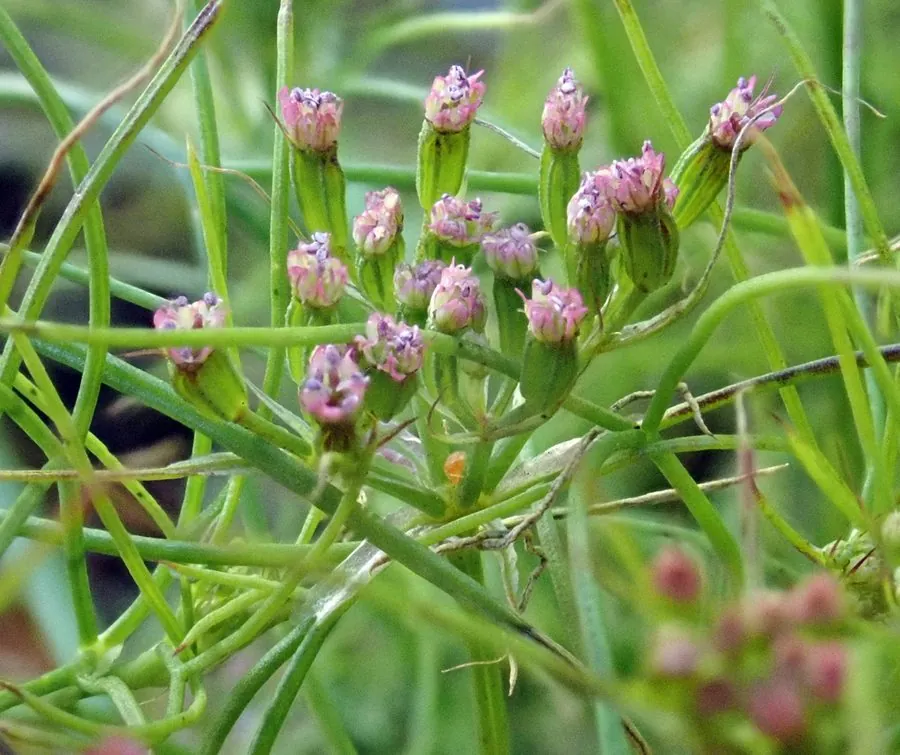

农作物与经济植物 · 植物界
孜然 Cuminum cyminum

伞形科一年生草本，果实细长、香气浓烈，是新疆烤肉与咖喱的核心香料，原产中东与中亚干旱地区。
- 分类
- 门被子植物门纲木兰纲目伞形目科伞形科属孜然芹属
- 栖息环境
- 干旱温暖地区、沙质土壤的农田，喜光、耐旱、忌湿涝
- 地理分布
- 原产埃及、土耳其至中亚，中国新疆为主产区，印度、伊朗等地广泛栽培
- 保护级别
- 暂无评估；栽培作物
物种志
孜然为伞形科孜然芹属一年生草本，株高 20–50 厘米，茎直立，多分枝，光滑。叶片二回羽状全裂，裂片细线形。复伞形花序顶生，花小，白色或淡粉，花期 5–6 月；双悬果长圆形，长 4–6 毫米，具 5 条纵棱，成熟后黄褐色，气味浓烈，即我们熟悉的孜然粒。
孜然原产埃及、土耳其至中亚的干旱地区，栽培历史超过两千年，中国新疆是主产区。其果实含枯茗醛等挥发油，是新疆烤羊肉、印度咖喱与墨西哥塔可的重要香料；入药有温中散寒、理气止痛之效。栽培喜温暖干燥、日照充足，适宜沙质壤土，忌湿涝，春播或以冬前播种，生长期需水量少。果实成熟后割取全株，晒干脱粒，研磨成粉后香气易散失，建议现磨现用。
形态与习性
- 原产地埃及、土耳其至中亚的干旱地区
- 株高20–50 厘米，茎直立多分枝
- 香料果实含枯茗醛，香气浓烈微苦
- 用途烤肉、咖喱与塔可调味，入药散寒理气
- 栽培喜温干、日照足，沙质壤土，忌湿涝
- 采收果实转黄后割株晒干脱粒
趣味知识
- 孜然粒加热后会释放强烈香气，新疆烤肉上桌前撒的那把就是它。
- 它是人类最早使用的香料之一，古埃及墓葬中已有孜然遗存。
- 孜然粉香气挥发快，整粒现磨的风味远胜市售粉末。
- 印度咖喱的“烟熏感”多半来自孜然与芥子、葫芦巴的复配。